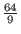

By 1993 it was know that a quantum computer could perform certain tasks asymptotically faster than any classical computer. Nonetheless research into quantum computing was largely driven by academic curiosity. In 1994 Peter Shor, a scientist working for Bell Labs, devised a polynomial time algorithm for finding prime factors of large numbers on a quantum computer. This discovery drew great attention to the field of quantum computing.
Shor's algorithm is viewed as important because the difficulty of finding prime factors of large numbers is relied upon for most cryptography systems. If an efficient method of factoring large numbers were to be discovered most of the current encryption schemes would be easily compromised. While it has not been proven that factoring large numbers can not be archived on a classical computer in polynomial time, the fastest published algorithm for factoring large number as of 2015 in O(exp(n1/3(log n)2/3), operations where n is the number of bits used to represent the number: this runtime exceeds polynomial time. In contrast Shor's algorithm runs in O((log n)2*loglog n) on a quantum computer, and then must perform O(log n) steps of post processing on a classical computer. Overall this time is polynomial. This discovery propelled the study of quantum computing forward, as such an algorithm is much sought after. (Shor)